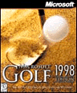

Example of Data Transfer Functionality
The code in this example sets the effectAllowed property to copy and the dropEffect property to display the copy cursor. The default action must be canceled in all events that are handled—in this example, ondragstart, ondragover, ondragenter, and ondrop.

Drag the image and drop it onto the text box below.
© 1999 Microsoft Corporation. All rights reserved. Terms of use.